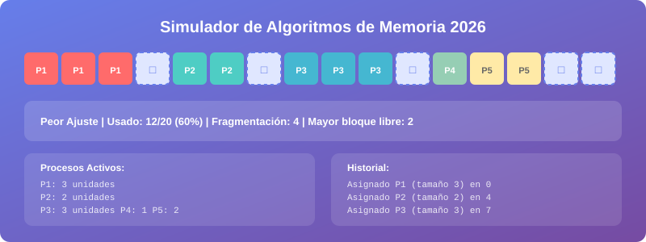

Guía de Uso
Esta guía te explica cómo interactuar con el simulador paso a paso.

Panel de controles
Seleccionar algoritmo
Usa el menú desplegable Algoritmo para cambiar entre:
- Peor Ajuste (Worst Fit) — asigna al bloque más grande disponible
- Mejor Ajuste (Best Fit) — asigna al bloque más pequeño suficiente
Cambio en caliente
Puedes cambiar el algoritmo en cualquier momento, incluso con procesos activos. Las nuevas asignaciones usarán el algoritmo recién seleccionado.
Agregar un proceso
- Escribe el tamaño en el campo numérico (unidades de memoria)
- Haz clic en Agregar o presiona
Enter - El simulador asignará el proceso según el algoritmo activo
- Si no hay espacio suficiente, aparecerá una alerta
Límite de memoria
Si el tamaño solicitado supera el mayor bloque libre disponible, la asignación fallará y se registrará en el historial.
Liberar memoria
| Botón | Acción |
|---|---|
| Liberar Aleatorio | Libera un proceso al azar de los activos |
| Limpiar Todo | Reinicia la memoria completamente |
Cambiar tamaño de memoria
- Escribe el nuevo tamaño en el campo Memoria
- Haz clic en Aplicar Tamaño
- La memoria se reiniciará con el nuevo tamaño
Tamaños recomendados
- Para demos rápidas: 20–50 unidades
- Para explorar fragmentación: 100–200 unidades
- Para carga alta: 500–1000 unidades
Ejecutar una Demo
Las demos automatizan la inserción de varios procesos en secuencia para que puedas observar el comportamiento del algoritmo sin intervención manual.
Controlar la demo
- Pausar Demo: congela la ejecución en el paso actual
- Reanudar Demo: continúa desde donde se pausó
- El panel de estado muestra si la demo está ejecutando o pausada
Leer la visualización
┌─────────────────────────────────────────┐
│ P1 P1 P1 □ □ P2 P2 □ □ □ P3 │
└─────────────────────────────────────────┘
↑ ↑ ↑
Ocupado Libre Ocupado
- Celdas de color → ocupadas por un proceso (cada proceso tiene su propio color)
- Celdas azul claro punteado (□) → libres
- Pasa el cursor sobre cualquier celda para ver su posición exacta
Leer las estadísticas
| Campo | Significado |
|---|---|
| Usado | Unidades ocupadas / total |
| Fragmentación | Cantidad de bloques libres separados |
| Mayor bloque | Tamaño del fragmento libre más grande disponible |
Usar la fragmentación como métrica
Un valor de fragmentación alto con un "Mayor bloque" pequeño indica que la memoria está muy fragmentada: hay mucho espacio libre pero inutilizable. Compara este valor entre Worst Fit y Best Fit con la misma demo.
Continúa con la Referencia Técnica para detalles de implementación.